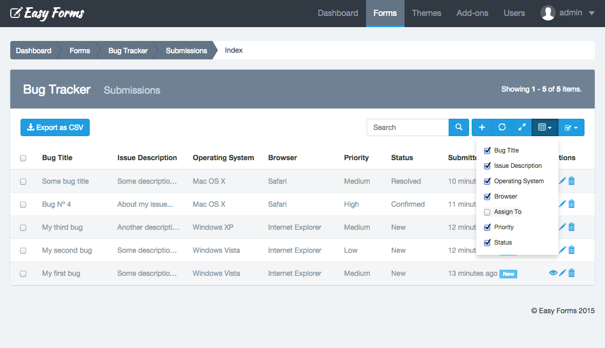
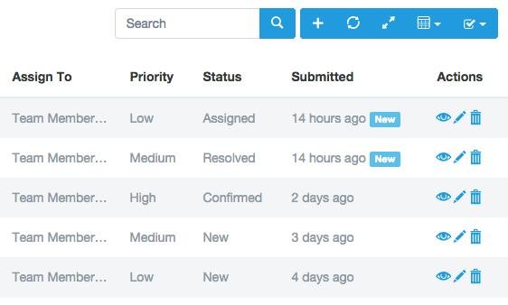
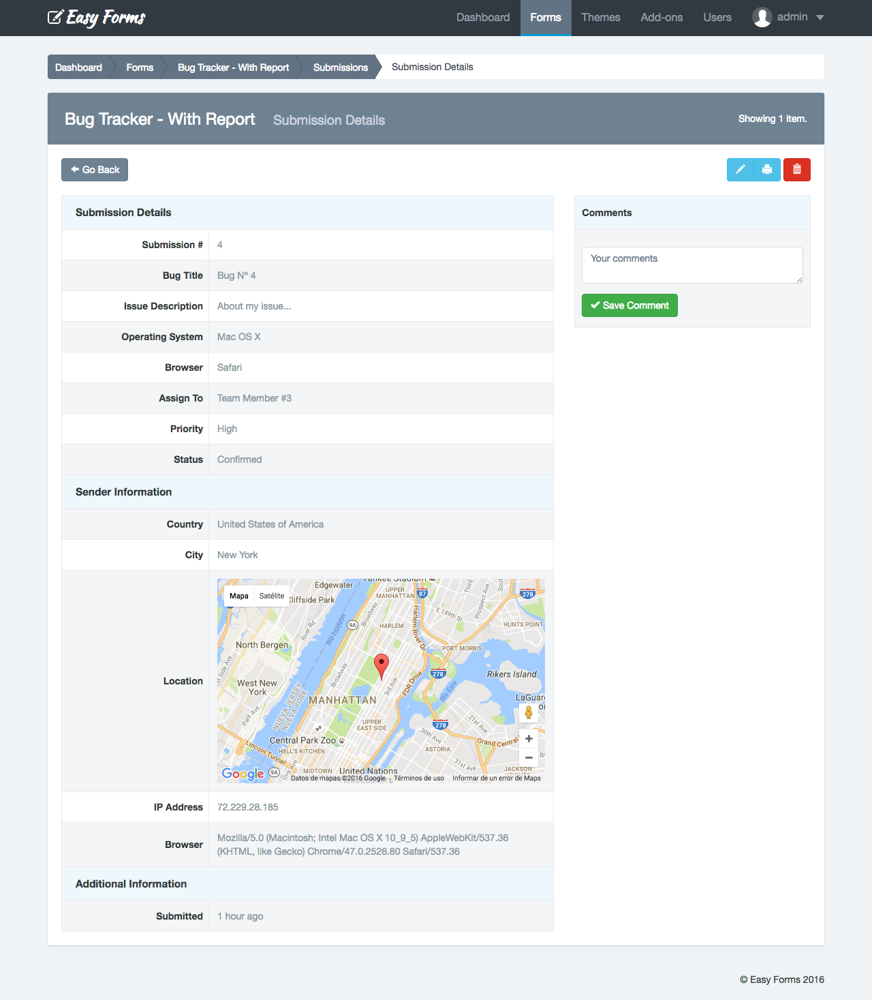
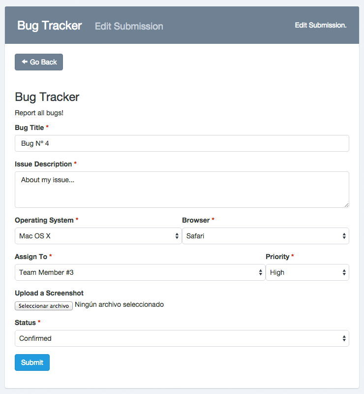
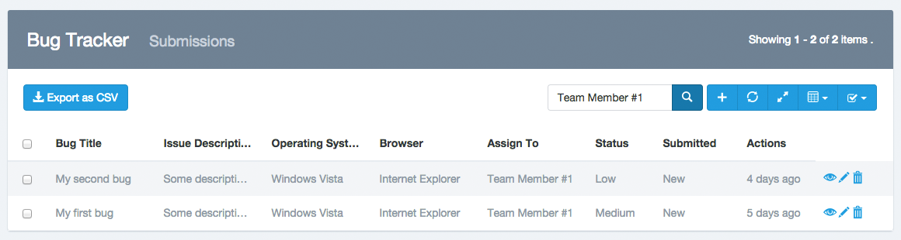
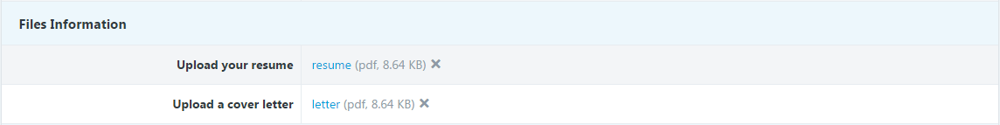

Submission Manager ¶
Introduction ¶
Submission Manager let you create, view, edit and delete data collected by your forms. To access the Submission Manager, you must go to Form Manager and click on the form name. From there click on Submission (Paper Airplane icon). Now you can check, edit or delete your submissions.

The Submission Manager, unlike other managers of the application, offers more features to adapt flexibly to the data collected by your forms.
These are some Submission Manager features you should consider:
- Navigation: Manager displays submissions in tabular form. In the table upper cell the form field label is displayed and then the submission data corresponding to that field. Submissions are sorted by creation date (when they were sent). You can sort your submissions by clicking on the cell "Submitted". Also the number of submissions displayed per page is defined according to the number of rows for the entire application, default is five. To view more submissions, you can use the Next and Previous buttons to go forward or backward.
Show / Hide columns: You will see a button with a Table icon to the search box right. If you hover the mouse over it, the message "Show / Hide Columns" appears. If you click on this button, a list with the name of each column is displayed, remove the check of a name and the column is hidden, add a check to a name and the column is displayed. The only thing to keep in mind at this point is that you cannot hide the "Checkbox", "Submitted" and "Actions" columns. And also, they must show at least two fields. If your form has many fields, use this feature to organize your manager to your preference.

- Resize columns: If your form has a large number of fields, display them all can make the data look too close together. Use this option to expand the width of the columns to a predefined minimum. You should note that Easy Forms has a responsive design, so those fields that exceed the width of the page will be hidden. To view them you will be able to scroll horizontally.
- Reset the Manager: If you have made modifications in the manager, for example, hiding columns. You can return to the default view by clicking on the "Reset" button.
- New submissions: Submissions with the "new" label next to the date are those unread. Once you enter to read the submission, the label "new" will disappear.
- Bulk actions: If you need, you can "delete" or "mark as read" multiple submissions at a time. For this, check the checkbox of each submission to modify and then click the top right button (Checkbox Checked Icon). It will show a menu with two options: Delete and Mark as Read. Click on the required action. You should note that to eliminate submissions, a popup will appear asking you to confirm your decision to delete. When you click OK, submissions will be deleted. This action cannot be undone.
Viewing a Submission Record ¶
When you click on a entry of the Submission Manager, a vertical table with all information collected will be displayed. By default, this entry is in read-only mode. To edit the entry, continue reading until you find the "Editing a Submission" section.
Submission information is divided in three sections:
- Submission Details: Shows the information collected by your form fields.
- Sender Information: Shows sender information collected by the application. Including country, city and google map.
- Additional Information: Displays the date and time when the Submission was made. If it was made or updated by a user logged into Easy Forms, the username will appear.

Note: Leave a comment about the submission. Comments can only be viewed in the Submission Manager—they aren't included in exports.
Editing a Submission ¶
To edit a Submission, go to the Submission Manager. Then, perform the following steps:
- Click on the submission to edit.
- You will see the Submission Information and at the right top see the "Edit" (pencil icon) button.
- Click the Edit button.
- The vertical table will become a similar form than the one you have created.
- Make the changes you need
- Submit the Form

Note: Keep in mind that when you edit an item, the data related to that submission will be overwritten permanently.
Create a Submission ¶
To edit a submission, go to the Submission Manager. Then, perform the following steps:
- Click the Add submission button (icon with the plus sign)
- You will see a similar form than the one you have created.
- Make the changes you need
- Submit the Form
- The new Submission will appear in the Submission Manager.
Deleting Submissions ¶
To delete a submission, go to the Submission Manager. Then, perform the following steps:
- Click on the submission you want to delete
- Click on the Delete red button (trash can icon) at the top right.
- A pop-up will appear asking you to confirm your decision to delete the submission.
- Click OK.
Note: Keep in mind that when you delete an item, the data related to that submission (including attachments) will be removed permanently.
Printing a Submission ¶
To print a Submission, go to the Submission Manager. Then, perform the following steps:
- Click on the submission to print.
- You will see the Submission Information and at the right top see the "Print" (printer icon) button.
- Click the Print button.
- The page preview to print will be displayed in black and white with submission details
- Make the changes you prefer in the printer dialog window
- Click on 'print'
Exporting Submissions ¶
To export all submissions collected by the form, click the "Export as CSV" button.
Searching Submissions ¶
To search, enter the search criteria in the search box located at the top of the Submission Manager. The search engine will return all instances of the word found in all the collected fields.

File Management ¶

You can manage files sent with your forms. Basically file management allows to:
- View sent files associated with the field used (label).
- Upload files when creating Form Submissions using the Submission Manager.
- Update uploaded files.
- Delete files
Important! When trying to update a Submission file made before the upgrade to version 1.3.6, older files will appear at the bottom of the list of uploaded files. You can remove them when you consider appropriate.